The sample VHDL code contained below is for tutorial purposes. An expert may be bothered by some of the wording of the examples because this WEB page is intended for people just starting to learn the VHDL language. There is no intention of teaching logic design, synthesis or designing integrated circuits. It is hoped that people who become knowledgeable of VHDL will be able to develop better models and more rapidly meet whatever their objectives might be using VHDL simulations.
The VHDL source code is hello_world.vhdl
This demonstrates the use of formatting text output to a screen.
A process is used to contain the sequential code that builds an
output line, then writes the line to standard output, the display screen.
Almost identical VHDL code hello_proc.vhdl
uses a procedure in place of the process to contain the sequential code.
note that the procedure has no arguments and the call needs no label.
Simply the statement my_proc; in the architecture is the call.
-- hello_world.vhdl Just output to the screen
-- This should be independent of whose VHDL you use
-- When using some vendors GUI, you have a learning curve
-- Using portable VHDL, it will run on all vendors
-- with implementations conforming to IEEE Std. 1076-1993
entity hello_world is -- test bench (top level like "main")
end entity hello_world;
library STD;
use STD.textio.all; -- basic I/O
library IEEE;
use IEEE.std_logic_1164.all; -- basic logic types
use IEEE.std_logic_textio.all; -- I/O for logic types
architecture test of hello_world is -- where declarations are placed
subtype word_32 is std_logic_vector(31 downto 0);
signal four_32 : word_32 := x"00000004"; -- just four
signal counter : integer := 1; -- initialized counter
begin -- where code is placed
my_print : process is
variable my_line : line; -- type 'line' comes from textio
begin
write(my_line, string'("Hello World")); -- formatting
writeline(output, my_line); -- write to "output"
write(my_line, string'("four_32 = "));
hwrite(my_line, four_32); -- format type std_logic_vector as hex
write(my_line, string'(" counter= "));
write(my_line, counter); -- format 'counter' as integer
write(my_line, string'(" at time "));
write(my_line, now); -- format time
writeline(output, my_line); -- write to display
wait;
end process my_print;
end architecture test;
-- compile/analyze this file, then simulate
-- the output on the screen should contain the following lines (without "-- ")
-- Hello World
-- four_32 = 00000004 counter= 1 at time 0 NS
-- hello_proc.vhdl Just output to the screen
-- This should be independent of whose VHDL you use
-- When using some vendors GUI, you have a learning curve
-- Using portable VHDL, it will run on all vendors
-- with implementations conforming to IEEE Std. 1076-1993
entity hello_proc is -- test bench (top level like "main")
end entity hello_proc;
library STD;
use STD.textio.all; -- basic I/O
library IEEE;
use IEEE.std_logic_1164.all; -- basic logic types
use IEEE.std_logic_textio.all; -- I/O for logic types
architecture test of hello_proc is -- where declarations are placed
subtype word_32 is std_logic_vector(31 downto 0);
signal four_32 : word_32 := x"00000004"; -- just four
signal counter : integer := 1; -- initialized counter
procedure my_proc is
variable my_line : line; -- type 'line' comes from textio
begin
write(my_line, string'("Hello Proc")); -- formatting
writeline(output, my_line); -- write to "output"
write(my_line, string'("four_32 = "));
hwrite(my_line, four_32); -- format type std_logic_vector as hex
write(my_line, string'(" counter= "));
write(my_line, counter); -- format 'counter' as integer
write(my_line, string'(" at time "));
write(my_line, now); -- format time
writeline(output, my_line); -- write to display
end procedure my_proc;
begin -- where code is placed
my_proc;
end architecture test;
-- compile/analyze this file, then simulate
-- the output on the screen should contain the following lines (without "-- ")
-- Hello Proc
-- four_32 = 00000004 counter= 1 at time 0 NS
The VHDL source code is file_io.vhdl
This example is a skeleton for a VHDL simulation that needs input
from a file, simulates based on the input and produces output to
a file. The output file may be used as input to other applications.
The importance of being able to write to the display screen and to
read and write files is to maintain portability of your VHDL code.
Especially test benches, must be independent of any specific VHDL
systems Graphic User Interface, GUI. GUI differ radically and it
may be important to you to be able to develop and debug your
VHDL code independent of the host machine and independent of
the VHDL system supplier.
-- file_io.vhdl write and read disk files in VHDL
-- typically used to load RAM or ROM, supply test input data,
-- record test output (possibly for further analysis)
entity file_io is -- test bench
end file_io;
library IEEE;
use IEEE.std_logic_1164.all;
use IEEE.std_logic_textio.all;
use STD.textio.all;
architecture test of file_io is
signal done : std_logic := '0'; -- flag set when simulation finished
begin -- test of file_io
done <= '1' after 5 sec; -- probably set via logic, not time
read_file:
process -- read file_io.in (one time at start of simulation)
file my_input : TEXT open READ_MODE is "file_io.in";
variable my_line : LINE;
variable my_input_line : LINE;
begin
write(my_line, string'("reading file"));
writeline(output, my_line);
loop
exit when endfile(my_input);
readline(my_input, my_input_line);
-- process input, possibly set up signals or arrays
writeline(output, my_input_line); -- optional, write to std out
end loop;
wait; -- one shot at time zero,
end process read_file;
write_file:
process (done) is -- write file_io.out (when done goes to '1')
file my_output : TEXT open WRITE_MODE is "file_io.out";
-- above declaration should be in architecture declarations for multiple
variable my_line : LINE;
variable my_output_line : LINE;
begin
if done='1' then
write(my_line, string'("writing file"));
writeline(output, my_line);
write(my_output_line, string'("output from file_io.vhdl"));
writeline(my_output, my_output_line);
write(my_output_line, done); -- or any other stuff
writeline(my_output, my_output_line);
end if;
end process write_file;
end architecture test; -- of file_io
-- standard output
-- reading file
-- line one of file_io.in
-- just showing that file
-- can be read.
-- writing file
-- file_io.out
-- output from file_io.vhdl
-- 1
The VHDL source code is sqrt8.vhdl
The output of the VHDL simulation sqrt8.out
The schematic is sqrt8.jpg
The Sm component schematic is sqrtsm.jpg
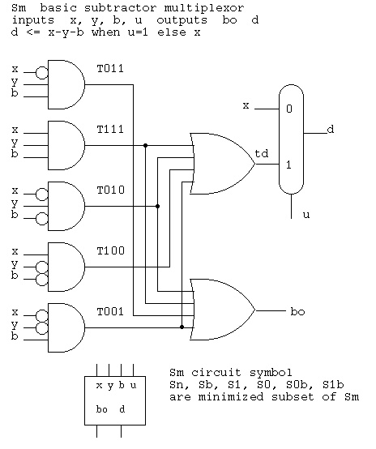
This example shows how a Sm component is directly coded in VHDL as
concurrent statements. The multiplexor is coded as a single "when"
statement. "Sm" is mnemonic for subtractor-multiplexor.
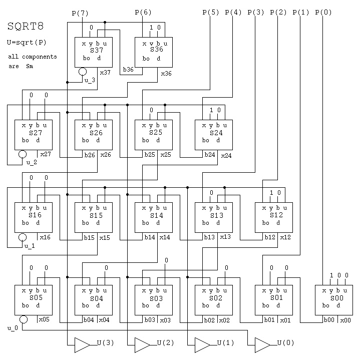
The overall circuit that inputs an 8-bit integer and outputs a 4-bit
integer square root uses many copies of the Sm component. This circuit
uses the "entity" method of instantiating copies of a component. The
"port map" is the mapping of actual parameters onto the formal
parameters in the Sm entity.
-- sqrt8.vhdl unsigned integer sqrt 8-bits computing unsigned integer 4-bits
-- sqrt(00000100) = 0010 sqrt(4)=2
-- sqrt(01000000) = 1000 sqrt(64)=8
library IEEE;
use IEEE.std_logic_1164.all;
entity Sm is -- subtractor multiplexor
port ( x : in std_logic;
y : in std_logic;
b : in std_logic;
u : in std_logic;
d : out std_logic;
bo : out std_logic);
end Sm;
architecture circuits of Sm is
signal t011, t111, t010, t001, t100, td : std_logic;
begin -- circuits of Sm
t011 <= (not x) and y and b;
t111 <= x and y and b;
t010 <= (not x) and y and (not b);
t001 <= (not x) and (not y) and b;
t100 <= x and (not y) and (not b);
bo <= t011 or t111 or t010 or t001;
td <= t100 or t001 or t010 or t111;
d <= td when u='1' else x;
end architecture circuits; -- of Sm
library IEEE;
use IEEE.std_logic_1164.all;
entity psqrt is
port ( P : in std_logic_vector(7 downto 0);
U : out std_logic_vector(3 downto 0));
end psqrt;
architecture circuits of psqrt is
signal zer : std_logic := '0';
signal one : std_logic := '1';
signal x00, x01, x02, x03, x04, x05, u_0 : std_logic;
signal b00, b01, b02, b03, b04, b05 : std_logic;
signal x12, x13, x14, x15, x16, u_1 : std_logic;
signal b12, b13, b14, b15, b16 : std_logic;
signal x24, x25, x26, x27, u_2 : std_logic;
signal b24, b25, b26, b27 : std_logic;
signal x36, x37, u_3 : std_logic;
signal b36, b37 : std_logic;
begin -- circuits of psqrt
-- x y b u d bo
s36: entity work.Sm port map(P(6), one, zer, u_3, x36, b36);
s37: entity work.Sm port map(P(7), zer, b36, u_3, x37, b37);
s24: entity work.Sm port map(P(4), one, zer, u_2, x24, b24);
s25: entity work.Sm port map(P(5), zer, b24, u_2, x25, b25);
s26: entity work.Sm port map(x36 , u_3, b25, u_2, x26, b26);
s27: entity work.Sm port map(x37 , zer, b26, zer, x27, b27);
s12: entity work.Sm port map(P(2), one, zer, u_1, x12, b12);
s13: entity work.Sm port map(P(3), zer, b12, u_1, x13, b13);
s14: entity work.Sm port map(x24 , u_2, b13, u_1, x14, b14);
s15: entity work.Sm port map(x25 , u_3, b14, u_1, x15, b15);
s16: entity work.Sm port map(x26 , zer, b15, zer, x16, b16);
s00: entity work.Sm port map(P(0), one, zer, zer, x00, b00);
s01: entity work.Sm port map(P(1), zer, b00, zer, x01, b01);
s02: entity work.Sm port map(x12 , u_1, b01, zer, x02, b02);
s03: entity work.Sm port map(x13 , u_2, b02, zer, x03, b03);
s04: entity work.Sm port map(x14 , u_3, b03, zer, x04, b04);
s05: entity work.Sm port map(x15 , zer, b04, zer, x05, b05);
u_0 <= not b05;
u_1 <= not b16;
u_2 <= not b27;
u_3 <= not b37;
U(0) <= u_0;
U(1) <= u_1;
U(2) <= u_2;
U(3) <= u_3;
end architecture circuits; -- of psqrt
library STD;
use STD.textio.all;
library IEEE;
use IEEE.std_logic_1164.all;
use IEEE.std_logic_textio.all;
use IEEE.numeric_std.all;
entity sqrt8 is -- test driver
end sqrt8;
architecture test of sqrt8 is
signal P : std_logic_vector(7 downto 0);
signal U : std_logic_vector(3 downto 0);
procedure print(P : std_logic_vector(7 downto 0);
U : std_logic_vector(3 downto 0)) is
variable my_line : line;
begin
write(my_line, string'("sqrt( "));
write(my_line, P);
write(my_line, string'(" )= "));
write(my_line, U);
writeline(output, my_line);
end print;
begin -- test of sqrt8
s1: entity work.psqrt port map(P, U); -- parallel code
driver: process -- serial code
begin -- process driver
for I in 0 to 255 loop
P <= std_logic_vector(to_unsigned(I,8));
wait for 2 ns;
print(P, U);
end loop;
end process driver;
end architecture test; -- of sqrt8
sqrt( 00000000 )= 0000
sqrt( 00000001 )= 0001
sqrt( 00000010 )= 0001
sqrt( 00000011 )= 0001
sqrt( 00000100 )= 0010
sqrt( 00000101 )= 0010
sqrt( 00000110 )= 0010
sqrt( 00000111 )= 0010
sqrt( 00001000 )= 0010
sqrt( 00001001 )= 0011
sqrt( 00001010 )= 0011
sqrt( 00001011 )= 0011
sqrt( 00001100 )= 0011
sqrt( 00001101 )= 0011
sqrt( 00001110 )= 0011
sqrt( 00001111 )= 0011
sqrt( 00010000 )= 0100
sqrt( 00010001 )= 0100
sqrt( 00010010 )= 0100
sqrt( 00010011 )= 0100
sqrt( 00010100 )= 0100
sqrt( 00010101 )= 0100
sqrt( 00010110 )= 0100
sqrt( 00010111 )= 0100
sqrt( 00011000 )= 0100
sqrt( 00011001 )= 0101
sqrt( 00011010 )= 0101
sqrt( 00011011 )= 0101
sqrt( 00011100 )= 0101
sqrt( 00011101 )= 0101
sqrt( 00011110 )= 0101
sqrt( 00011111 )= 0101
sqrt( 00100000 )= 0101
sqrt( 00100001 )= 0101
sqrt( 00100010 )= 0101
sqrt( 00100011 )= 0101
sqrt( 00100100 )= 0110
sqrt( 00100101 )= 0110
sqrt( 00100110 )= 0110
sqrt( 00100111 )= 0110
sqrt( 00101000 )= 0110
sqrt( 00101001 )= 0110
sqrt( 00101010 )= 0110
sqrt( 00101011 )= 0110
sqrt( 00101100 )= 0110
sqrt( 00101101 )= 0110
sqrt( 00101110 )= 0110
sqrt( 00101111 )= 0110
sqrt( 00110000 )= 0110
sqrt( 00110001 )= 0111
sqrt( 00110010 )= 0111
sqrt( 00110011 )= 0111
sqrt( 00110100 )= 0111
sqrt( 00110101 )= 0111
sqrt( 00110110 )= 0111
sqrt( 00110111 )= 0111
sqrt( 00111000 )= 0111
sqrt( 00111001 )= 0111
sqrt( 00111010 )= 0111
sqrt( 00111011 )= 0111
sqrt( 00111100 )= 0111
sqrt( 00111101 )= 0111
sqrt( 00111110 )= 0111
sqrt( 00111111 )= 0111
sqrt( 01000000 )= 1000
sqrt( 01000001 )= 1000
sqrt( 01000010 )= 1000
sqrt( 01000011 )= 1000
sqrt( 01000100 )= 1000
sqrt( 01000101 )= 1000
sqrt( 01000110 )= 1000
sqrt( 01000111 )= 1000
sqrt( 01001000 )= 1000
sqrt( 01001001 )= 1000
sqrt( 01001010 )= 1000
sqrt( 01001011 )= 1000
sqrt( 01001100 )= 1000
sqrt( 01001101 )= 1000
sqrt( 01001110 )= 1000
sqrt( 01001111 )= 1000
sqrt( 01010000 )= 1000
sqrt( 01010001 )= 1001
sqrt( 01010010 )= 1001
... many cases deleted
sqrt( 11111101 )= 1111
sqrt( 11111110 )= 1111
sqrt( 11111111 )= 1111
The theory of operation is explained here:
The two classic algorithms for square root, sqrt, are shown below.
The first is the iterative approximation algorithm,
followed by the sequential algorithm modeled after the
non restoring binary divide algorithm.
The basic theory is shown in the final decimal example.
To compute y = sqrt(x) (x>=0, iterative quadratic convergence)
if x = 0 then return x (IEEE, math: return 0)
y = 1.0 (any reasonable guess>0)
y1 = 0
while abs(y-y1)>tolerance (any reasonable tolerance>0)
y1 = y
y = (y + x/y)/2
end while
return y
To compute y = sqrt(x) (x>=0 demonstrated in binary)
1 0 1 let x=11010 26 decimal
+--------- choose 1 squared, subtract, keep if positive
) 01 10 10 shift two bits at a time
-01 subtract guess squared
------
0 10
-1 01 sqrt so far with 01 appended
-------- no subtract because result would be negative
10 10
-10 01 sqrt so far with 01 appended
------
1
In digital logic, the sqrt algorithm for n-bit numbers:
requires n/2 sequential steps or
requires n/2 parallel subtractors
In decimal from www.dattalo.com/technical/theory/sqrt.html
1 7 7. 2
-------------
) 03 14 15.92
-01 square 1*1
------ 1*20 = 20 (20 is base ten times 2)
2 14 need x (20+x)*x<214 x=7
-1.89 (20+7)*7=189
------- so far, 17*20 = 340
25 15 need (340+x)*x<2515 x=7
-24 29 (340+7)7*7=2429
------- so far, 177*20 = 3540
86 92 need (3540+x)*x<8692 x=2
-70 84 (3540+2)*2=7084
-----
16 08
(Note that the binary is easier because 20 becomes 4, a two place
shift, and x is always tested as a 1, 01 positionally)
The VHDL source code is sqrt8m.vhdl
The output of the VHDL simulation is sqrt8m.out
The schematic is sqrt8m.jpg
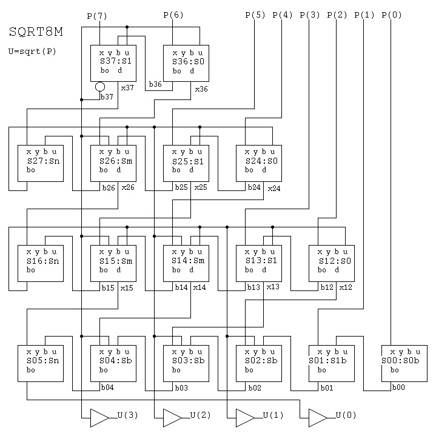
This circuit performs the same function on the input as does
sqrt8.vhdl above. The difference is that many specialized
entities were created as building block components. The specialization
eliminates circuitry that is not needed because the inputs are
logical 0 or 1. This was a step in developing the parallel 32-bit
square root circuit shown next. Removing gates reduces power because
there is always some leakage current. Removing gates may or may not
reduce chip area in a regular structure.
The Sm component family are subsets of the schematic sqrtsm.jpg
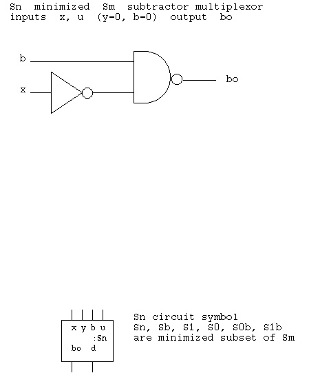
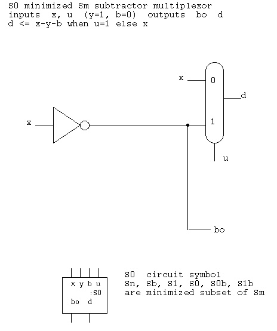
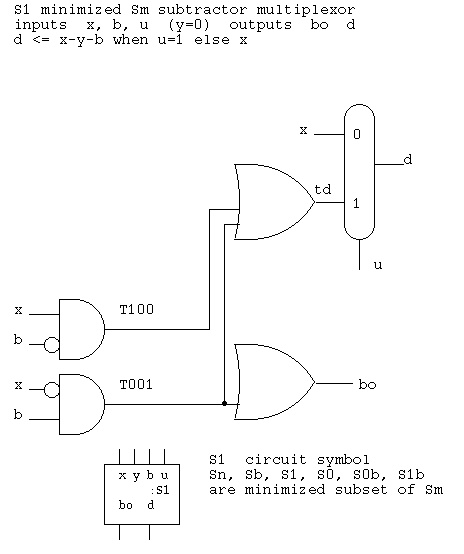
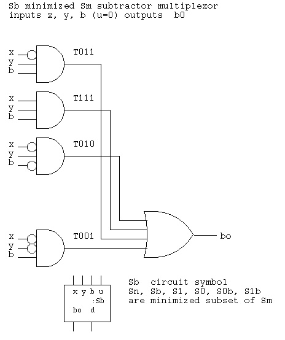
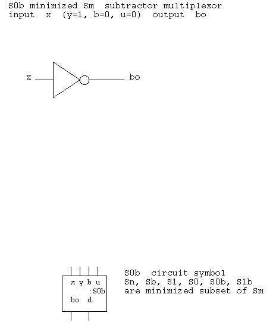
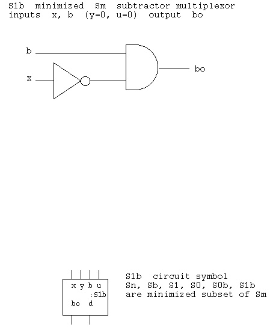
-- sqrt8m.vhdl unsigned integer sqrt 8-bits computing unsigned integer 4-bits
-- sqrt(00000100) = 0010 sqrt(4)=2
-- sqrt(01000000) = 1000 sqrt(64)=8
-- modification of sqrt8.vhdl with specialized circuits
library IEEE;
use IEEE.std_logic_1164.all;
entity Sm is -- subtractor multiplexor
port ( x : in std_logic;
y : in std_logic;
b : in std_logic;
u : in std_logic;
d : out std_logic;
bo : out std_logic);
end Sm;
architecture circuits of Sm is
signal t011, t111, t010, t001, t100, td : std_logic;
begin -- circuits of Sm
t011 <= (not x) and y and b;
t111 <= x and y and b;
t010 <= (not x) and y and (not b);
t001 <= (not x) and (not y) and b;
t100 <= x and (not y) and (not b);
bo <= t011 or t111 or t010 or t001;
td <= t100 or t001 or t010 or t111;
d <= td when u='1' else x;
end architecture circuits; -- of Sm
library IEEE;
use IEEE.std_logic_1164.all;
entity Sb is
port ( x : in std_logic;
y : in std_logic;
b : in std_logic;
bo : out std_logic);
end Sb;
architecture circuits of Sb is
signal t011, t111, t010, t001 : std_logic;
begin -- circuits of Sb
t011 <= (not x) and y and b;
t111 <= x and y and b;
t010 <= (not x) and y and (not b);
t001 <= (not x) and (not y) and b;
bo <= t011 or t111 or t010 or t001;
end architecture circuits; -- of Sb
library IEEE;
use IEEE.std_logic_1164.all;
entity S1 is -- subtractor multiplexor
port ( x : in std_logic;
b : in std_logic;
u : in std_logic;
d : out std_logic;
bo : out std_logic);
end S1;
architecture circuits of S1 is
signal t100, t001, td : std_logic;
begin -- circuits of S1
t001 <= (not x) and b;
t100 <= x and (not b);
bo <= t001;
td <= t100 or t001;
d <= td when u='1' else x;
end architecture circuits; -- of S1
library IEEE;
use IEEE.std_logic_1164.all;
entity S0 is
port ( x : in std_logic;
u : in std_logic;
d : out std_logic;
bo : out std_logic);
end S0;
architecture circuits of S0 is
begin -- circuits of S0
bo <= not x;
d <= not x when u='1' else x;
end architecture circuits; -- of S0
library IEEE;
use IEEE.std_logic_1164.all;
entity Sn is -- subtractor multiplexor
port ( x : in std_logic;
b : in std_logic;
bo : out std_logic);
end Sn;
architecture circuits of Sn is
begin -- circuits of Sn
bo <= (not x) nand b; -- complemented
end architecture circuits; -- of Sn
library IEEE;
use IEEE.std_logic_1164.all;
entity S0b is
port ( x : in std_logic;
bo : out std_logic);
end S0b;
architecture circuits of S0b is
begin -- circuits of S0b
bo <= not x;
end architecture circuits; -- of S0b
library IEEE;
use IEEE.std_logic_1164.all;
entity S1b is
port ( x : in std_logic;
b : in std_logic;
bo : out std_logic);
end S1b;
architecture circuits of S1b is
begin -- circuits of S1b
bo <= (not x) and b;
end architecture circuits; -- of S1b
library IEEE;
use IEEE.std_logic_1164.all;
entity psqrt is
port ( P : in std_logic_vector(7 downto 0);
U : out std_logic_vector(3 downto 0));
end psqrt;
architecture circuits of psqrt is
signal b00, b01, b02, b03, b04, b05 : std_logic;
signal x12, x13, x14, x15 : std_logic;
signal b12, b13, b14, b15, b16 : std_logic;
signal x24, x25, x26 : std_logic;
signal b24, b25, b26, b27 : std_logic;
signal x36, x37, bxx : std_logic;
signal b36, b37 : std_logic;
begin -- circuits of psqrt
-- x y b u d bo
s36: entity work.S0 port map(P(6), b37, x36, b36);
s37: entity work.S1 port map(P(7), b36, b37, x37, bxx);
b37 <= not bxx;
s24: entity work.S0 port map(P(4), b27, x24, b24);
s25: entity work.S1 port map(P(5), b24, b27, x25, b25);
s26: entity work.Sm port map(x36 , b37, b25, b27, x26, b26);
s27: entity work.Sn port map(x37 , b26, b27);
s12: entity work.S0 port map(P(2), b16, x12, b12);
s13: entity work.S1 port map(P(3), b12, b16, x13, b13);
s14: entity work.Sm port map(x24 , b27, b13, b16, x14, b14);
s15: entity work.Sm port map(x25 , b37, b14, b16, x15, b15);
s16: entity work.Sn port map(x26 , b15, b16);
s00: entity work.S0b port map(P(0), b00);
s01: entity work.S1b port map(P(1), b00, b01);
s02: entity work.Sb port map(x12 , b16, b01, b02);
s03: entity work.Sb port map(x13 , b27, b02, b03);
s04: entity work.Sb port map(x14 , b37, b03, b04);
s05: entity work.Sn port map(x15 , b04, b05);
U(0) <= b05;
U(1) <= b16;
U(2) <= b27;
U(3) <= b37;
end architecture circuits; -- of psqrt
library STD;
use STD.textio.all;
library IEEE;
use IEEE.std_logic_1164.all;
use IEEE.std_logic_textio.all;
--use IEEE.std_logic_arith.all;
use IEEE.numeric_std.all;
entity sqrt8m is -- test driver
end sqrt8m;
architecture test of sqrt8m is
signal P : std_logic_vector(7 downto 0);
signal U : std_logic_vector(3 downto 0);
procedure print(P : std_logic_vector(7 downto 0);
U : std_logic_vector(3 downto 0)) is
variable my_line : line;
alias swrite is write [line, string, side, width] ;
begin
swrite(my_line, "sqrt( ");
write(my_line, P);
swrite(my_line, " )= ");
write(my_line, U);
writeline(output, my_line);
end print;
begin -- test of sqrt8m
s1: entity work.psqrt port map(P, U); -- parallel code
driver: process -- serial code
begin -- process driver
for I in 0 to 255 loop
P <= std_logic_vector(to_unsigned(I,8));
wait for 2 ns;
print(P, U);
end loop;
end process driver;
end architecture test; -- of sqrt8m
file sqrt8m.out
sqrt( 00000000 )= 0000
sqrt( 00000001 )= 0001
sqrt( 00000010 )= 0001
sqrt( 00000011 )= 0001
sqrt( 00000100 )= 0010
sqrt( 00000101 )= 0010
sqrt( 00000110 )= 0010
sqrt( 00000111 )= 0010
sqrt( 00001000 )= 0010
sqrt( 00001001 )= 0011
sqrt( 00001010 )= 0011
sqrt( 00001011 )= 0011
sqrt( 00001100 )= 0011
sqrt( 00001101 )= 0011
sqrt( 00001110 )= 0011
sqrt( 00001111 )= 0011
sqrt( 00010000 )= 0100
sqrt( 00010001 )= 0100
sqrt( 00010010 )= 0100
sqrt( 00010011 )= 0100
sqrt( 00010100 )= 0100
sqrt( 00010101 )= 0100
sqrt( 00010110 )= 0100
sqrt( 00010111 )= 0100
sqrt( 00011000 )= 0100
sqrt( 00011001 )= 0101
sqrt( 00011010 )= 0101
sqrt( 00011011 )= 0101
sqrt( 00011100 )= 0101
sqrt( 00011101 )= 0101
sqrt( 00011110 )= 0101
sqrt( 00011111 )= 0101
sqrt( 00100000 )= 0101
sqrt( 00100001 )= 0101
sqrt( 00100010 )= 0101
sqrt( 00100011 )= 0101
sqrt( 00100100 )= 0110
sqrt( 00100101 )= 0110
sqrt( 00100110 )= 0110
sqrt( 00100111 )= 0110
sqrt( 00101000 )= 0110
sqrt( 00101001 )= 0110
sqrt( 00101010 )= 0110
sqrt( 00101011 )= 0110
sqrt( 00101100 )= 0110
sqrt( 00101101 )= 0110
sqrt( 00101110 )= 0110
sqrt( 00101111 )= 0110
sqrt( 00110000 )= 0110
sqrt( 00110001 )= 0111
sqrt( 00110010 )= 0111
sqrt( 00110011 )= 0111
sqrt( 00110100 )= 0111
sqrt( 00110101 )= 0111
sqrt( 00110110 )= 0111
sqrt( 00110111 )= 0111
sqrt( 00111000 )= 0111
sqrt( 00111001 )= 0111
sqrt( 00111010 )= 0111
sqrt( 00111011 )= 0111
sqrt( 00111100 )= 0111
sqrt( 00111101 )= 0111
sqrt( 00111110 )= 0111
sqrt( 00111111 )= 0111
sqrt( 01000000 )= 1000
sqrt( 01000001 )= 1000
sqrt( 01000010 )= 1000
sqrt( 01000011 )= 1000
sqrt( 01000100 )= 1000
sqrt( 01000101 )= 1000
sqrt( 01000110 )= 1000
sqrt( 01000111 )= 1000
sqrt( 01001000 )= 1000
sqrt( 01001001 )= 1000
sqrt( 01001010 )= 1000
sqrt( 01001011 )= 1000
sqrt( 01001100 )= 1000
sqrt( 01001101 )= 1000
sqrt( 01001110 )= 1000
sqrt( 01001111 )= 1000
sqrt( 01010000 )= 1000
sqrt( 01010001 )= 1001
sqrt( 01010010 )= 1001
... many cases deleted
sqrt( 11111101 )= 1111
sqrt( 11111110 )= 1111
sqrt( 11111111 )= 1111
The VHDL source code is sqrt32.vhdl The output of the VHDL simulation is sqrt32.out The schematic was never drawn. sqrt8m.vhdl was expanded using "generate" statements to create sqrt32.vhdl
Common building blocks for simulating digital logic are adders, registers, multiplexors and counters. This example shows a set of generic entities and the corresponding architectures that have the word length and delay time as generic parameters. In addition to being useful in circuits, the generic word length allows much smaller circuits to be debugged and then the word length increased to the final desired value. The test bench uses a word length of 8 while the example circuit that performs a sequential multiplication uses a 16 bit word length. Similar to the entity declaration "port" and the entity instantiation "port map", with generics there is an entity declaration "generic" and the entity instantiation "generic map." The VHDL source code for the generic adder is add_g.vhdl The VHDL source code for the generic register is reg_g.vhdl The VHDL source code for the generic multiplexor is mux_g.vhdl The VHDL source code for the generic counter is cntr_g.vhdl The VHDL source code for the generic test bench is test_g.vhdl The output of the VHDL simulation is test_g.out
The VHDL source code for the generic serial multiplier is mul_ser_g.vhdl The output of the VHDL simulation is mul_ser_g.out This simulation models a multiplier using "hi" and "lo" registers used in the MIPS architecture and is similar to the Patterson and Hennessey example.
The VHDL source code for a barrel shifter, includes both behavioral
and circuit description bshift.vhdl
The VHDL source code for testing bshift.vhdl and comparing the behavioral
model to the circuit model test_bshift.vhdl
Note the example use of a package and a function definition to convert
the 5-bit std_logic_vector shift count "shift" to an integer "shft"
The one process "test_data_generator" updates the signal "count" and
also prints the results of the behavioral and circuit model for the
three types of shifts: left logical, right logical and right arithmetic.
The output of the VHDL simulation is test_bshift.out
A partial schematic of the right logical shift is
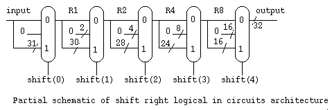
-- bshift.vhdl A barrel shifter for 32 bit words
-- includes shift left logical (sll), shift right logical(srl) and
-- shift right arithmetic (sra)
-- both behavioral and circuit models (two architectures) included
--
-- Note: behavior requires util_package for 'to_integer'
-- circuit requires mux_32 component
-- the physical circuit uses 17 mux's, 7 mux delay
library IEEE;
use IEEE.std_logic_1164.all;
Entity bshift is -- barrel shifter
port (left : in std_logic; -- '1' for left, '0' for right
logical : in std_logic; -- '1' for logical, '0' for arithmetic
shift : in std_logic_vector(4 downto 0); -- shift count
input : in std_logic_vector (31 downto 0);
output : out std_logic_vector (31 downto 0) );
end entity bshift;
architecture behavior of bshift is
function to_integer(sig : std_logic_vector) return integer is
variable num : integer := 0; -- descending sig as integer
begin
for i in sig'range loop
if sig(i)='1' then
num := num*2+1;
else
num := num*2;
end if;
end loop; -- i
return num;
end function to_integer;
begin -- behavior
shft32: process(left, logical, input, shift)
variable shft : integer;
variable out_right_arithmetic : std_logic_vector(31 downto 0);
variable out_right_logical : std_logic_vector(31 downto 0);
variable out_left_logical : std_logic_vector(31 downto 0);
begin
shft := to_integer(shift);
if logical = '0' then
out_right_arithmetic := (31 downto 32-shft => input(31)) &
input(31 downto shft);
output <= out_right_arithmetic after 250 ps;
else
if left = '1' then
out_left_logical := input(31-shft downto 0) &
(shft-1 downto 0 => '0');
output <= out_left_logical after 250 ps;
else
out_right_logical := (31 downto 32-shft => '0') &
input(31 downto shft);
output <= out_right_logical after 250 ps;
end if;
end if;
end process shft32;
end architecture behavior; -- of bshift
architecture circuits of bshift is
signal LR : std_logic_vector(31 downto 0);
signal L1s : std_logic_vector(31 downto 0);
signal L2s : std_logic_vector(31 downto 0);
signal L4s : std_logic_vector(31 downto 0);
signal L8s : std_logic_vector(31 downto 0);
signal L16s : std_logic_vector(31 downto 0);
signal L1 : std_logic_vector(31 downto 0);
signal L2 : std_logic_vector(31 downto 0);
signal L4 : std_logic_vector(31 downto 0);
signal L8 : std_logic_vector(31 downto 0);
signal L16 : std_logic_vector(31 downto 0);
signal R1s : std_logic_vector(31 downto 0);
signal R2s : std_logic_vector(31 downto 0);
signal R4s : std_logic_vector(31 downto 0);
signal R8s : std_logic_vector(31 downto 0);
signal R16s : std_logic_vector(31 downto 0);
signal R1 : std_logic_vector(31 downto 0);
signal R2 : std_logic_vector(31 downto 0);
signal R4 : std_logic_vector(31 downto 0);
signal R8 : std_logic_vector(31 downto 0);
signal R16 : std_logic_vector(31 downto 0);
signal A1s : std_logic_vector(31 downto 0);
signal A2s : std_logic_vector(31 downto 0);
signal A4s : std_logic_vector(31 downto 0);
signal A8s : std_logic_vector(31 downto 0);
signal A16s : std_logic_vector(31 downto 0);
signal A1 : std_logic_vector(31 downto 0);
signal A2 : std_logic_vector(31 downto 0);
signal A4 : std_logic_vector(31 downto 0);
signal A8 : std_logic_vector(31 downto 0);
signal A16 : std_logic_vector(31 downto 0);
signal input2s : std_logic_vector(1 downto 0);
signal input4s : std_logic_vector(3 downto 0);
signal input8s : std_logic_vector(7 downto 0);
signal input16s : std_logic_vector(15 downto 0);
component mux_32
port(in0 : in std_logic_vector (31 downto 0);
in1 : in std_logic_vector (31 downto 0);
ctl : in std_logic;
result : out std_logic_vector (31 downto 0));
end component;
begin -- circuits
L1w: L1s <= input(30 downto 0) & '0'; -- just wiring
L1m: mux_32 port map (in0=>input, in1=>L1s, ctl=>shift(0), result=>L1);
L2w: L2s <= L1(29 downto 0) & "00"; -- just wiring
L2m: mux_32 port map (in0=>L1, in1=>L2s, ctl=>shift(1), result=>L2);
L4w: L4s <= L2(27 downto 0) & "0000"; -- just wiring
L4m: mux_32 port map (in0=>L2, in1=>L4s, ctl=>shift(2), result=>L4);
L8w: L8s <= L4(23 downto 0) & "00000000"; -- just wiring
L8m: mux_32 port map (in0=>L4, in1=>L8s, ctl=>shift(3), result=>L8);
L16w: L16s <= L8(15 downto 0) & "0000000000000000"; -- just wiring
L16m: mux_32 port map (in0=>L8, in1=>L16s, ctl=>shift(4), result=>L16);
R1w: R1s <= '0' & input(31 downto 1); -- just wiring
R1m: mux_32 port map (in0=>input, in1=>R1s, ctl=>shift(0), result=>R1);
R2w: R2s <= "00" & R1(31 downto 2); -- just wiring
R2m: mux_32 port map (in0=>R1, in1=>R2s, ctl=>shift(1), result=>R2);
R4w: R4s <= "0000" & R2(31 downto 4); -- just wiring
R4m: mux_32 port map (in0=>R2, in1=>R4s, ctl=>shift(2), result=>R4);
R8w: R8s <= "00000000" & R4(31 downto 8); -- just wiring
R8m: mux_32 port map (in0=>R4, in1=>R8s, ctl=>shift(3), result=>R8);
R16w: R16s <= "0000000000000000" & R8(31 downto 16); -- just wiring
R16m: mux_32 port map (in0=>R8, in1=>R16s, ctl=>shift(4), result=>R16);
A1w: A1s <= input(31)&input(31 downto 1); -- just wiring
A1m: mux_32 port map (in0=>input, in1=>A1s, ctl=>shift(0), result=>A1);
A2w: A2s <= input2s&A1(31 downto 2); -- just wiring
A2m: mux_32 port map (in0=>A1, in1=>A2s, ctl=>shift(1), result=>A2);
A4w: A4s <= input4s&A2(31 downto 4); -- just wiring
A4m: mux_32 port map (in0=>A2, in1=>A4s, ctl=>shift(2), result=>A4);
A8w: A8s <= input8s&A4(31 downto 8); -- just wiring
A8m: mux_32 port map (in0=>A4, in1=>A8s, ctl=>shift(3), result=>A8);
A16w: A16s <= input16s&A8(31 downto 16); -- just wiring
A16m: mux_32 port map (in0=>A8, in1=>A16s, ctl=>shift(4), result=>A16);
AS2: input2s <= input(31) & input(31); -- just wiring
AS4: input4s <= input2s & input2s; -- just wiring
AS8: input8s <= input4s & input4s; -- just wiring
AS16: input16s <= input8s & input8s; -- just wiring
OLR: mux_32 port map (in0=>R16, in1=>L16, ctl=>left, result=>LR);
LOG: mux_32 port map (in0=>A16, in1=>LR, ctl=>logical, result=>output);
end architecture circuits; -- of bshift
The VHDL source code for a serial multiplier, using a shortcut model
where a signal acts like a register. "hi" and "lo" are registers
clocked by the condition mulclk'event and mulclk='1'
The VHDL is mul_ser.vhdl
The output of the simulation is mul_ser.out
At the start of multiply: the multiplicand is in "md", the multiplier
is in "lo" and "hi" contains 00000000. This multiplier only works
for positive numbers. Use a Booth multiplier for twos-complement
values.
At the end of multiply: the upper product is in "hi and the
lower product is in "lo."
A partial schematic of just the multiplier data flow is
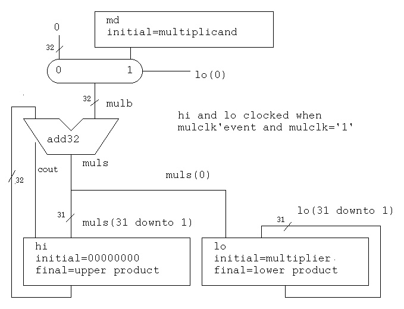
-- mul_ser.vhdl multiplier implemented as serial adds (one 32 bit adder)
-- needs a 32 bit adder called add32, else fix to use another adder
-- this is for positive operands, use Booth multiplier for two's complement
-- This example uses a signal as a register, modify to suit your needs.
entity mul_ser is -- test bench
end mul_ser;
library IEEE;
use IEEE.std_logic_1164.all;
use IEEE.std_logic_arith.all;
use IEEE.std_logic_textio.all;
use STD.textio.all;
architecture schematic of mul_ser is
subtype word is std_logic_vector(31 downto 0);
signal md : word := x"20010007"; -- multiplier or divisor
signal hi : word := x"00000000"; -- top register (final=00000002)
signal lo : word := x"00000011"; -- bottom register (final=20110077)
signal cout : std_logic; -- adder carry out
signal muls : word := x"00000000"; -- adder sum
signal mulb : word := x"00000000"; -- multiplexor output
signal clk : std_logic := '0'; -- system clock
signal mulclk : std_logic := '0'; -- multiplier clock
signal mulenb : std_logic := '1'; -- enable multiplication
signal cntr : std_logic_vector(5 downto 0) := "000000"; -- counter
begin -- schematic
clk <= not clk after 5 ns; -- 10 ns period
cntr <= unsigned(cntr)+unsigned'("000001") when clk'event and clk='1';
-- cntr statement is equivalent to six bit adder and clocked register
mulenb <= '0' when (cntr="100001"); -- enable/disable multiply
mulclk <= clk and mulenb after 50 ps; -- the multipliers "private" clock
-- multiplier structure, not a component!
mulb <= md when (lo(0)='1') else x"00000000" after 50 ps; -- mux md or 0
adder:entity WORK.add32 port map(hi, mulb, '0', muls, cout); -- 32 bit adder
hi <= cout & muls(31 downto 1) when mulclk'event and mulclk='1'; --note shift
lo <= muls(0) & lo(31 downto 1) when mulclk'event and mulclk='1';--note shift
printout: postponed process(clk) -- just to see values
variable my_line : LINE; -- not part of working circuit
begin
if clk='0' then -- quiet time, falling clock
if cntr="000000" then
write(my_line, string'("md="));
hwrite(my_line, md);
writeline(output, my_line);
end if;
write(my_line, string'("at count "));
write(my_line, cntr);
write(my_line, string'(" mulb="));
hwrite(my_line, mulb);
write(my_line, string'(" muls="));
hwrite(my_line, muls);
write(my_line, string'(" hi="));
hwrite(my_line, hi);
write(my_line, string'(" lo="));
hwrite(my_line, lo);
writeline(output, my_line);
end if;
end process printout;
end schematic;
The result of running mul_ser.vhdl is
md=20010007
at count 000000 mulb=20010007 muls=00000000 hi=00000000 lo=00000011
at count 000001 mulb=00000000 muls=10008003 hi=10008003 lo=80000008
at count 000010 mulb=00000000 muls=08004001 hi=08004001 lo=C0000004
at count 000011 mulb=00000000 muls=04002000 hi=04002000 lo=E0000002
at count 000100 mulb=20010007 muls=22011007 hi=02001000 lo=70000001
at count 000101 mulb=00000000 muls=11008803 hi=11008803 lo=B8000000
at count 000110 mulb=00000000 muls=08804401 hi=08804401 lo=DC000000
at count 000111 mulb=00000000 muls=04402200 hi=04402200 lo=EE000000
at count 001000 mulb=00000000 muls=02201100 hi=02201100 lo=77000000
at count 001001 mulb=00000000 muls=01100880 hi=01100880 lo=3B800000
at count 001010 mulb=00000000 muls=00880440 hi=00880440 lo=1DC00000
at count 001011 mulb=00000000 muls=00440220 hi=00440220 lo=0EE00000
at count 001100 mulb=00000000 muls=00220110 hi=00220110 lo=07700000
at count 001101 mulb=00000000 muls=00110088 hi=00110088 lo=03B80000
at count 001110 mulb=00000000 muls=00088044 hi=00088044 lo=01DC0000
at count 001111 mulb=00000000 muls=00044022 hi=00044022 lo=00EE0000
at count 010000 mulb=00000000 muls=00022011 hi=00022011 lo=00770000
at count 010001 mulb=00000000 muls=00011008 hi=00011008 lo=803B8000
at count 010010 mulb=00000000 muls=00008804 hi=00008804 lo=401DC000
at count 010011 mulb=00000000 muls=00004402 hi=00004402 lo=200EE000
at count 010100 mulb=00000000 muls=00002201 hi=00002201 lo=10077000
at count 010101 mulb=00000000 muls=00001100 hi=00001100 lo=8803B800
at count 010110 mulb=00000000 muls=00000880 hi=00000880 lo=4401DC00
at count 010111 mulb=00000000 muls=00000440 hi=00000440 lo=2200EE00
at count 011000 mulb=00000000 muls=00000220 hi=00000220 lo=11007700
at count 011001 mulb=00000000 muls=00000110 hi=00000110 lo=08803B80
at count 011010 mulb=00000000 muls=00000088 hi=00000088 lo=04401DC0
at count 011011 mulb=00000000 muls=00000044 hi=00000044 lo=02200EE0
at count 011100 mulb=00000000 muls=00000022 hi=00000022 lo=01100770
at count 011101 mulb=00000000 muls=00000011 hi=00000011 lo=008803B8
at count 011110 mulb=00000000 muls=00000008 hi=00000008 lo=804401DC
at count 011111 mulb=00000000 muls=00000004 hi=00000004 lo=402200EE
at count 100000 mulb=20010007 muls=20010009 hi=00000002 lo=20110077
at count 100001 mulb=20010007 muls=20010009 hi=00000002 lo=20110077
at count 100010 mulb=20010007 muls=20010009 hi=00000002 lo=20110077
The modified Booth serial multiplier, using a shortcut model is:
The VHDL is bmul_ser.vhdl
The output of the simulation is bmul_ser.out
A partial schematic of the Booth multiplier data flow is
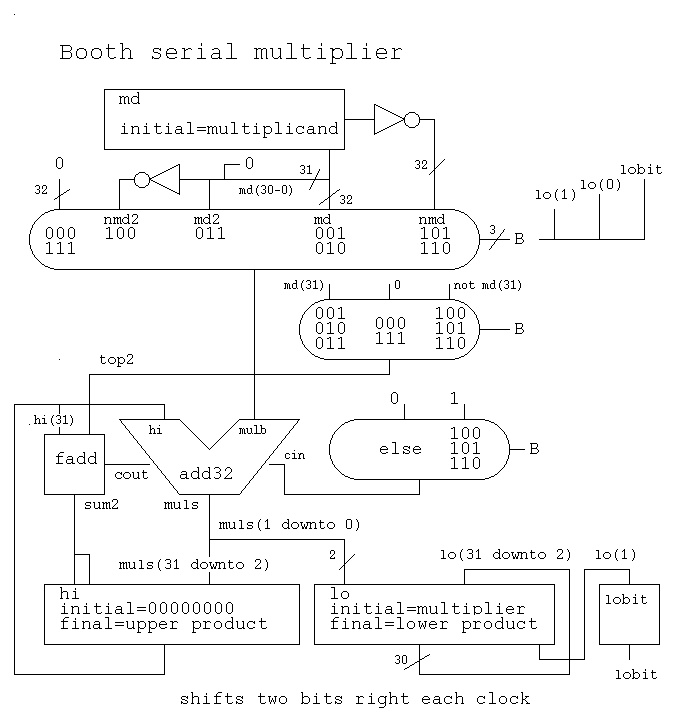
-- bmul_ser.vhdl multiplier implemented as serial adds (one 32 bit adder)
-- needs a 32 bit adder called add32, and full adder stage called fadd
-- Booth multiplier for two's complement
-- This example uses a signal as a register, uses 'when' as a mux
-- modify to suit your needs.
-- Booth multiply control table
-- B multiplicand b=md -b=nmd +2b=md2 -2b=nmd2
-- i+1 i i-1 mulb
-- 0 0 0 0
-- 0 0 1 +b
-- 0 1 0 +b
-- 0 1 1 +2b
-- 1 0 0 -2b cin='1'
-- 1 0 1 -b cin='1'
-- 1 1 0 -b cin='1'
-- 1 1 1 0
entity bmul_ser is -- test bench
end bmul_ser;
library IEEE;
use IEEE.std_logic_1164.all;
use IEEE.std_logic_arith.all;
use IEEE.std_logic_textio.all;
use STD.textio.all;
architecture schematic of bmul_ser is
subtype word is std_logic_vector(31 downto 0);
signal md : word := x"A0010007"; -- multiplier or divisor
signal hi : word := x"00000000"; -- top register (final=00000002)
signal lo : word := x"00000011"; -- bottom register (final=20110077)
signal cout : std_logic; -- adder carry out
signal muls : word := x"00000000"; -- adder sum
signal mulb : word := x"00000000"; -- multiplexor output
signal clk : std_logic := '0'; -- system clock
signal mulclk : std_logic := '0'; -- multiplier clock
signal mulenb : std_logic := '1'; -- enable multiplication
signal cntr : std_logic_vector(5 downto 0) := "000000"; -- counter
signal B : std_logic_vector(2 downto 0) := "000"; -- Booth control
signal lobit : std_logic := '0'; -- low Booth bit
signal cout2 : std_logic; -- extra bit
signal sum2 : std_logic; -- extra bit
signal top2 : std_logic; -- extra bit
signal nmd : word; -- negative of md
signal md2 : word; -- two times md
signal nmd2 : word; -- two times negative md
signal cin : std_logic; -- for +/- b
begin -- schematic of bmul_ser
clk <= not clk after 5 ns; -- 10 ns period
cntr <= unsigned(cntr)+unsigned'("000001") when clk'event and clk='1';
-- cntr statement is equivalent to six bit adder and clocked register
nmd <= not md;
md2 <= md(30 downto 0) & '0';
nmd2 <= not md2;
mulenb <= '0' when (cntr="010001"); -- enable/disable multiply
mulclk <= clk and mulenb after 50 ps; -- the multipliers "private" clock
-- multiplier structure, not a component!
B <= lo(1) & lo(0) & lobit;
mulb <= md when B="001" or B="010" -- 5 input mux
else md2 when B="011"
else nmd2 when B="100"
else nmd when B="101" or B="110"
else x"00000000" after 50 ps; -- "000" and "111" case
top2 <= md(31) when B="001" or B="010" or B="011"
else not md(31) when B="100" or B="101" or B="110"
else '0';
cin <= '1' when B="100" or B="101" or B="110"
else '0';
adder:entity WORK.add32 port map(hi, mulb, cin, muls, cout); -- 32 bit adder
xtra:entity WORK.fadd port map(hi(31),top2 ,cout, sum2, cout2); --1 bit adder
hi <= sum2 & sum2 & muls(31 downto 2) when mulclk'event and mulclk='1';
lo <= muls(1 downto 0) & lo(31 downto 2) when mulclk'event and mulclk='1';
lobit <= lo(1) when mulclk'event and mulclk='1';
printout: postponed process(clk) -- just to see values
variable my_line : LINE; -- not part of working circuit
begin
if clk='0' then -- quiet time, falling clock
if cntr="000000" then
write(my_line, string'("md="));
hwrite(my_line, md);
writeline(output, my_line);
end if;
write(my_line, string'("at count "));
write(my_line, cntr);
write(my_line, string'(" mulb="));
hwrite(my_line, mulb);
write(my_line, string'(" muls="));
hwrite(my_line, muls);
write(my_line, string'(" hi="));
hwrite(my_line, hi);
write(my_line, string'(" lo="));
hwrite(my_line, lo);
write(my_line, string'(" B="));
write(my_line, lo(1));
write(my_line, lo(0));
write(my_line, lobit);
writeline(output, my_line);
end if;
end process printout;
end schematic; -- of bmul_ser
The result of running bmul_ser.vhdl is
md=A0010007
at count 000000 mulb=A0010007 muls=00000000 hi=00000000 lo=00000011 B=010
at count 000001 mulb=00000000 muls=E8004001 hi=E8004001 lo=C0000004 B=000
at count 000010 mulb=A0010007 muls=9A011007 hi=FA001000 lo=70000001 B=010
at count 000011 mulb=00000000 muls=E6804401 hi=E6804401 lo=DC000000 B=000
at count 000100 mulb=00000000 muls=F9A01100 hi=F9A01100 lo=77000000 B=000
at count 000101 mulb=00000000 muls=FE680440 hi=FE680440 lo=1DC00000 B=000
at count 000110 mulb=00000000 muls=FF9A0110 hi=FF9A0110 lo=07700000 B=000
at count 000111 mulb=00000000 muls=FFE68044 hi=FFE68044 lo=01DC0000 B=000
at count 001000 mulb=00000000 muls=FFF9A011 hi=FFF9A011 lo=00770000 B=000
at count 001001 mulb=00000000 muls=FFFE6804 hi=FFFE6804 lo=401DC000 B=000
at count 001010 mulb=00000000 muls=FFFF9A01 hi=FFFF9A01 lo=10077000 B=000
at count 001011 mulb=00000000 muls=FFFFE680 hi=FFFFE680 lo=4401DC00 B=000
at count 001100 mulb=00000000 muls=FFFFF9A0 hi=FFFFF9A0 lo=11007700 B=000
at count 001101 mulb=00000000 muls=FFFFFE68 hi=FFFFFE68 lo=04401DC0 B=000
at count 001110 mulb=00000000 muls=FFFFFF9A hi=FFFFFF9A lo=01100770 B=000
at count 001111 mulb=00000000 muls=FFFFFFE6 hi=FFFFFFE6 lo=804401DC B=000
at count 010000 mulb=5FFEFFF8 muls=5FFEFFF2 hi=FFFFFFF9 lo=A0110077 B=110
at count 010001 mulb=5FFEFFF8 muls=5FFEFFF2 hi=FFFFFFF9 lo=A0110077 B=110
at count 010010 mulb=5FFEFFF8 muls=5FFEFFF2 hi=FFFFFFF9 lo=A0110077 B=110
at count 010011 mulb=5FFEFFF8 muls=5FFEFFF2 hi=FFFFFFF9 lo=A0110077 B=110
The VHDL source code for a serial divider, using a shortcut model
where a signal acts like a register. "hi", "lo" and quo are registers
clocked by the condition divclk'event and divclk='1'
The VHDL is div_ser.vhdl
The output of the simulation is div_ser.out
At the start of the divide: the divisor is in "md" ,
the upper dividend is in "hi" and the lower dividend is in "lo."
At the end of the divide: "lo" contains the quotient and "hi" contains
the uncorrected remainder (may need the divisor added to remainder)
A partial schematic of just the divider data flow is
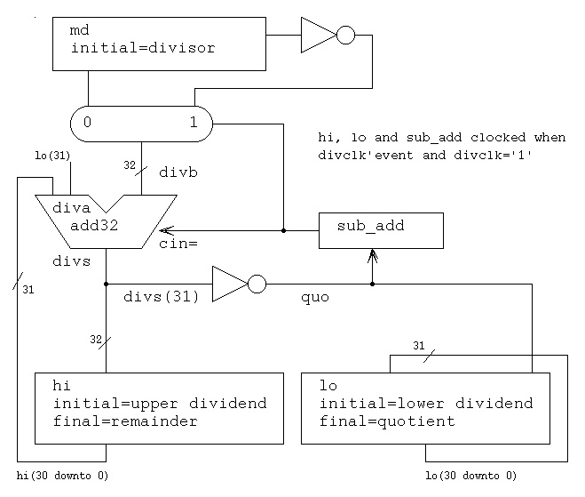
-- div_ser.vhdl division implemented as serial adds (one 32 bit adder)
-- needs component add32
-- non restoring division (remainder may need correction - in this case
-- add divisor, because remainder not same sign
-- as dividend.)
-- This example uses a signal as a register, modify to suit your needs.
entity div_ser is -- test bench for divide serial
end div_ser ;
library IEEE;
use IEEE.std_logic_1164.all;
use IEEE.std_logic_textio.all;
use IEEE.std_logic_arith.all;
use STD.textio.all;
architecture schematic of div_ser is
subtype word is std_logic_vector(31 downto 0);
-- 85 / 7 = 12 with remainder 1 (FFFFFFFA + 00000007 = 00000001)
signal md : word := x"00000007"; -- multiplier or divisor
signal hi : word := x"00000000"; -- top of dividend (final remainder)
signal lo : word := x"00000055"; -- bottom of dividend
signal cout : std_logic; -- adder carry out
signal divs : word := x"00000000"; -- adder sum
signal diva : word := x"00000000"; -- shifted dividend
signal divb : word := x"00000000"; -- multiplexor output
signal quo : std_logic := '0'; -- quotient bit
signal sub_add : std_logic := '1'; -- subtract first (also cin)
signal clk : std_logic := '0'; -- system clock
signal divenb : std_logic := '1'; -- divide enable
signal divclk : std_logic := '0'; -- run division
signal cntr : std_logic_vector(5 downto 0) := "000000"; -- counter
begin -- schematic
clk <= not clk after 5 ns; -- 10 ns period
cntr <= unsigned(cntr)+unsigned'("000001") when clk'event and clk='1';
-- cntr statement is equivalent to six bit adder and clocked register
divenb <= '0' when cntr="100001"; -- stop divide
divclk <= clk and divenb after 50 ps;
-- divider structure, not a component!
diva <= hi(30 downto 0) & lo(31) after 50 ps; -- shift
divb <= not md when sub_add='1' else md after 50 ps; -- subtract or add
adder:entity WORK.add32 port map(diva, divb, sub_add, divs, cout);
quo <= not divs(31) after 50 ps; -- quotient bit
hi <= divs when divclk'event and divclk='1';
lo <= lo(30 downto 0) & quo when divclk'event and divclk='1';
sub_add <= quo when divclk'event and divclk='1';
printout: postponed process(clk) -- just to see values
variable my_line : LINE; -- not part of working circuit
begin
if clk='0' then -- quiet time, falling clock
if cntr="000000" then
write(my_line, string'("divisor="));
write(my_line, md);
writeline(output, my_line);
end if;
write(my_line, string'("at count "));
write(my_line, cntr);
write(my_line, string'(" diva="));
hwrite(my_line, diva);
write(my_line, string'(" divb="));
hwrite(my_line, divb);
write(my_line, string'(" hi="));
hwrite(my_line, hi);
write(my_line, string'(" lo="));
hwrite(my_line, lo);
write(my_line, string'(" quo="));
write(my_line, quo);
writeline(output, my_line);
end if;
end process printout;
end schematic;
The result of running div_ser.vhdl is
divisor=00000000000000000000000000000111
at count 000000 diva=00000000 divb=FFFFFFF8 hi=00000000 lo=00000055 quo=0
at count 000001 diva=FFFFFFF2 divb=00000007 hi=FFFFFFF9 lo=000000AA quo=0
at count 000010 diva=FFFFFFF2 divb=00000007 hi=FFFFFFF9 lo=00000154 quo=0
at count 000011 diva=FFFFFFF2 divb=00000007 hi=FFFFFFF9 lo=000002A8 quo=0
at count 000100 diva=FFFFFFF2 divb=00000007 hi=FFFFFFF9 lo=00000550 quo=0
at count 000101 diva=FFFFFFF2 divb=00000007 hi=FFFFFFF9 lo=00000AA0 quo=0
at count 000110 diva=FFFFFFF2 divb=00000007 hi=FFFFFFF9 lo=00001540 quo=0
at count 000111 diva=FFFFFFF2 divb=00000007 hi=FFFFFFF9 lo=00002A80 quo=0
at count 001000 diva=FFFFFFF2 divb=00000007 hi=FFFFFFF9 lo=00005500 quo=0
at count 001001 diva=FFFFFFF2 divb=00000007 hi=FFFFFFF9 lo=0000AA00 quo=0
at count 001010 diva=FFFFFFF2 divb=00000007 hi=FFFFFFF9 lo=00015400 quo=0
at count 001011 diva=FFFFFFF2 divb=00000007 hi=FFFFFFF9 lo=0002A800 quo=0
at count 001100 diva=FFFFFFF2 divb=00000007 hi=FFFFFFF9 lo=00055000 quo=0
at count 001101 diva=FFFFFFF2 divb=00000007 hi=FFFFFFF9 lo=000AA000 quo=0
at count 001110 diva=FFFFFFF2 divb=00000007 hi=FFFFFFF9 lo=00154000 quo=0
at count 001111 diva=FFFFFFF2 divb=00000007 hi=FFFFFFF9 lo=002A8000 quo=0
at count 010000 diva=FFFFFFF2 divb=00000007 hi=FFFFFFF9 lo=00550000 quo=0
at count 010001 diva=FFFFFFF2 divb=00000007 hi=FFFFFFF9 lo=00AA0000 quo=0
at count 010010 diva=FFFFFFF2 divb=00000007 hi=FFFFFFF9 lo=01540000 quo=0
at count 010011 diva=FFFFFFF2 divb=00000007 hi=FFFFFFF9 lo=02A80000 quo=0
at count 010100 diva=FFFFFFF2 divb=00000007 hi=FFFFFFF9 lo=05500000 quo=0
at count 010101 diva=FFFFFFF2 divb=00000007 hi=FFFFFFF9 lo=0AA00000 quo=0
at count 010110 diva=FFFFFFF2 divb=00000007 hi=FFFFFFF9 lo=15400000 quo=0
at count 010111 diva=FFFFFFF2 divb=00000007 hi=FFFFFFF9 lo=2A800000 quo=0
at count 011000 diva=FFFFFFF2 divb=00000007 hi=FFFFFFF9 lo=55000000 quo=0
at count 011001 diva=FFFFFFF3 divb=00000007 hi=FFFFFFF9 lo=AA000000 quo=0
at count 011010 diva=FFFFFFF4 divb=00000007 hi=FFFFFFFA lo=54000000 quo=0
at count 011011 diva=FFFFFFF7 divb=00000007 hi=FFFFFFFB lo=A8000000 quo=0
at count 011100 diva=FFFFFFFC divb=00000007 hi=FFFFFFFE lo=50000000 quo=1
at count 011101 diva=00000007 divb=FFFFFFF8 hi=00000003 lo=A0000001 quo=1
at count 011110 diva=00000000 divb=FFFFFFF8 hi=00000000 lo=40000003 quo=0
at count 011111 diva=FFFFFFF3 divb=00000007 hi=FFFFFFF9 lo=80000006 quo=0
at count 100000 diva=FFFFFFF4 divb=00000007 hi=FFFFFFFA lo=0000000C quo=0
at count 100001 diva=FFFFFFF4 divb=00000007 hi=FFFFFFFA lo=0000000C quo=0
at count 100010 diva=FFFFFFF4 divb=00000007 hi=FFFFFFFA lo=0000000C quo=0
An unsigned multiplier using a carry save adder structure.
The VHDL source code for a parallel multiplier, using 'generate'
to make the VHDL source code small is mul32c.vhdl
The test bench is mul32c_test.vhdl
The output of the simulation is mul32c_test.out
The VHDL source code for a parallel Booth multiplier, two's complement
32-bit multiplicand by 32-bit multiplier input producing 64-bit product
is bmul32.vhdl
The test bench is bmul32_test.vhdl
The output of the simulation is bmul32_test.out
Both VHDL models use a concurrent conditional statement to model
various multiplexors.
A partial schematic of the multiplier is
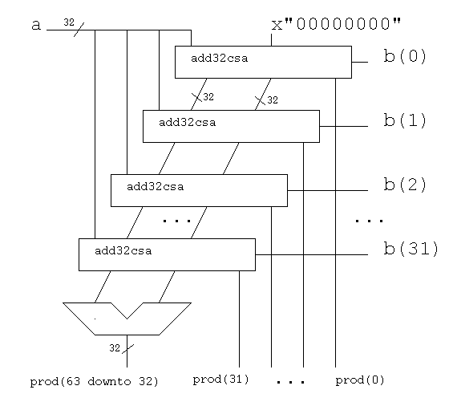
A partial schematic of the add32csa is
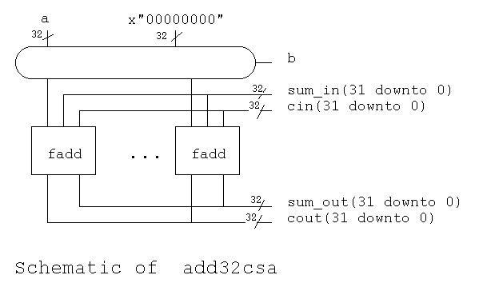
-- mul32c.vhdl parallel multiply 32 bit x 32 bit to get 64 bit unsigned product
-- uses add32 component and fadd component, includes carry save
-- uses VHDL 'generate' to have less statements
library IEEE;
use IEEE.std_logic_1164.all;
entity add32csa is -- one stage of carry save adder for multiplier
port(
b : in std_logic; -- a multiplier bit
a : in std_logic_vector(31 downto 0); -- multiplicand
sum_in : in std_logic_vector(31 downto 0); -- sums from previous stage
cin : in std_logic_vector(31 downto 0); -- carrys from previous stage
sum_out : out std_logic_vector(31 downto 0); -- sums to next stage
cout : out std_logic_vector(31 downto 0)); -- carrys to next stage
end add32csa;
architecture circuits of add32csa is
signal zero : std_logic_vector(31 downto 0) := X"00000000";
signal aa : std_logic_vector(31 downto 0) := X"00000000";
component fadd -- duplicates entity port
port(a : in std_logic;
b : in std_logic;
cin : in std_logic;
s : out std_logic;
cout : out std_logic);
end component fadd;
begin -- circuits of add32csa
aa <= a when b='1' else zero after 1 ns;
stage: for I in 0 to 31 generate
sta: fadd port map(aa(I), sum_in(I), cin(I) , sum_out(I), cout(I));
end generate stage;
end architecture circuits; -- of add32csa
library IEEE;
use IEEE.std_logic_1164.all;
entity mul32c is -- 32 x 32 = 64 bit unsigned product multiplier
port(a : in std_logic_vector(31 downto 0); -- multiplicand
b : in std_logic_vector(31 downto 0); -- multiplier
prod : out std_logic_vector(63 downto 0)); -- product
end mul32c;
architecture circuits of mul32c is
signal zero : std_logic_vector(31 downto 0) := X"00000000";
signal nc1 : std_logic;
type arr32 is array(0 to 31) of std_logic_vector(31 downto 0);
signal s : arr32; -- partial sums
signal c : arr32; -- partial carries
signal ss : arr32; -- shifted sums
component add32csa is -- duplicate entity port
port(b : in std_logic;
a : in std_logic_vector(31 downto 0);
sum_in : in std_logic_vector(31 downto 0);
cin : in std_logic_vector(31 downto 0);
sum_out : out std_logic_vector(31 downto 0);
cout : out std_logic_vector(31 downto 0));
end component add32csa;
component add32 -- duplicate entity port
port(a : in std_logic_vector(31 downto 0);
b : in std_logic_vector(31 downto 0);
cin : in std_logic;
sum : out std_logic_vector(31 downto 0);
cout : out std_logic);
end component add32;
begin -- circuits of mul32c
st0: add32csa port map(b(0), a, zero , zero, s(0), c(0)); -- CSA stage
ss(0) <= '0'&s(0)(31 downto 1) after 1 ns;
prod(0) <= s(0)(0) after 1 ns;
stage: for I in 1 to 31 generate
st: add32csa port map(b(I), a, ss(I-1) , c(I-1), s(I), c(I)); -- CSA stage
ss(I) <= '0'&s(I)(31 downto 1) after 1 ns;
prod(I) <= s(I)(0) after 1 ns;
end generate stage;
add: add32 port map(ss(31), c(31), '0' , prod(63 downto 32), nc1); -- adder
end architecture circuits; -- of mul32c
The test bench for mul32c.vhdl is mul32c_test.vhdl
-- mul32c_test.vhdl test entity mul32c
--signal a[32]; multiplier
--signal b[32]; multiplicand
--signal c[64]; product
library STD;
use STD.textio.all;
library IEEE;
use IEEE.std_logic_1164.all;
use IEEE.std_logic_textio.all;
use IEEE.std_logic_arith.all;
entity mul32c_test is
end mul32c_test;
architecture circuits of mul32c_test is
signal cntr : std_logic_vector(3 downto 0) := B"0001";
signal a : std_logic_vector(31 downto 0) := X"00000000";
signal b : std_logic_vector(31 downto 0) := X"00000000";
signal prod : std_logic_vector(63 downto 0);
component mul32c -- 32 x 32 = 64 bit product multiplier
port(a : in std_logic_vector(31 downto 0); -- multiplicand
b : in std_logic_vector(31 downto 0); -- multiplier
prod : out std_logic_vector(63 downto 0)); -- product
end component mul32c;
procedure my_printout(a : std_logic_vector(31 downto 0);
b : std_logic_vector(31 downto 0);
prod: std_logic_vector(63 downto 0)) is
variable my_line : line;
alias swrite is write [line, string, side, width] ;
begin
swrite(my_line, "a=");
hwrite(my_line, a);
swrite(my_line, ", b=");
hwrite(my_line, b);
swrite(my_line, ", prod=");
hwrite(my_line, prod);
swrite(my_line, ", cntr=");
write(my_line, cntr);
swrite(my_line, ", at=");
write(my_line, now);
writeline(output, my_line);
writeline(output, my_line); -- blank line
end my_printout;
begin -- circuits of mul32c_test
mult32: mul32c port map(a, b, prod); -- parallel circuit
driver: process -- serial code
variable my_line : LINE;
begin -- process driver
write(my_line, string'("Driver starting."));
writeline(output, my_line);
for i in 0 to 4 loop
a( 3 downto 0) <= cntr; -- or "0001";
a( 7 downto 4) <= cntr;
a(11 downto 8) <= cntr;
a(15 downto 12) <= cntr;
a(19 downto 16) <= cntr;
a(23 downto 20) <= cntr;
a(27 downto 24) <= cntr;
a(31 downto 28) <= cntr;
b( 3 downto 0) <= cntr;
b( 7 downto 4) <= cntr;
b(11 downto 8) <= cntr;
b(15 downto 12) <= cntr;
b(19 downto 16) <= cntr;
b(23 downto 20) <= cntr;
b(27 downto 24) <= cntr;
b(31 downto 28) <= cntr;
wait for 319 ns; -- pseudo clock wait for propogation
my_printout(a, b, prod); -- write output
cntr <= unsigned(cntr) + unsigned(cntr);
wait for 1 ns;
end loop; -- i
a <= x"FFFFFFFF";
b <= x"FFFFFFFF";
wait for 319 ns; -- pseudo clock wait for propogation
my_printout(a, b, prod); -- write output
cntr <= unsigned(cntr) + unsigned(cntr);
a <= x"7FFFFFFF";
b <= x"7FFFFFFF";
wait for 319 ns; -- pseudo clock wait for propogation
my_printout(a, b, prod); -- write output
cntr <= unsigned(cntr) + unsigned(cntr);
end process driver;
end architecture circuits; -- of mul32c_test
configuration mul32c_config of mul32c_test is
for circuits -- of mul32c_test
for all: mul32c
use entity WORK.mul32c(circuits);
for circuits -- of mul32c
for stage
for all: add32csa
use entity WORK.add32csa(circuits);
for circuits -- of add32csa
for stage
for all: fadd
use entity WORK.fadd(circuits);
end for;
end for;
end for;
end for;
end for;
for all: add32csa
use entity WORK.add32csa(circuits);
for circuits -- of add32csa
for stage
for all: fadd
use entity WORK.fadd(circuits);
end for;
end for;
end for;
end for;
for all: add32
use entity WORK.add32(circuits);
for circuits -- of add32
for all: add4
use entity WORK.add4(circuits);
for circuits -- of add4
for all: fadd
use entity WORK.fadd(circuits);
end for;
end for;
end for;
end for;
end for;
end for;
end for;
end for;
end configuration mul32c_config;
The output of mul32c_test.vhdl is
Driver starting.
a=11111111, b=11111111, prod=0123456787654321, cntr=0001, at=319 NS
a=22222222, b=22222222, prod=048D159E1D950C84, cntr=0010, at=639 NS
a=44444444, b=44444444, prod=1234567876543210, cntr=0100, at=959 NS
a=88888888, b=88888888, prod=48D159E1D950C840, cntr=1000, at=1279 NS
a=00000000, b=00000000, prod=0000000000000000, cntr=0000, at=1599 NS
a=FFFFFFFF, b=FFFFFFFF, prod=FFFFFFFE00000001, cntr=0000, at=1919 NS
a=7FFFFFFF, b=7FFFFFFF, prod=3FFFFFFF00000001, cntr=0000, at=2238 NS
Driver starting.
Ran until 2400 NS + 0
An unsigned divider using non-restoring divide with uncorrected
remainder. The basic cell is a Controlled Add/Subtract, CAS.
A partial schematic of the divider is
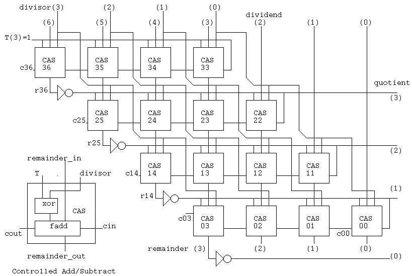
The source code is in divcas4_test.vhdl.
The test bench is divcas4_test.vhdl
The output of the simulation is divcas4_test.out
-- divcas4_test.vhdl parallel division
-- based on non-restoring division, uncorrected remainder
-- Controlled add/subtract "cas" cell (NOT CSA)
-- "T" is sub_add signal in div_ser.vhdl
library IEEE;
use IEEE.std_logic_1164.all;
entity cas is -- Controlled Add/Subtract cell
port (
divisor : in std_logic;
T : in std_logic;
remainder_in : in std_logic;
cin : in std_logic;
remainder_out : out std_logic;
cout : out std_logic);
end entity cas;
architecture circuits of cas is
signal tt : std_logic;
begin -- circuits of cas
tt <= T xor divisor after 10 ps;
remainder_out <= tt xor remainder_in xor cin after 10 ps;
cout <= (tt and remainder_in) or (tt and cin) or
(remainder_in and cin) after 10 ps;
end architecture circuits; -- of cas
library IEEE;
use IEEE.std_logic_1164.all;
entity divcas4 is -- 8 bit dividend, 4 bit divisor
port (
dividend : in std_logic_vector(7 downto 0);
divisor : in std_logic_vector(3 downto 0);
quotient : out std_logic_vector(3 downto 0);
remainder : out std_logic_vector(3 downto 0));
end entity divcas4;
use IEEE.std_logic_textio.all;
use STD.textio.all;
architecture circuits of divcas4 is
signal T : std_logic_vector(3 downto 0);
signal c36, c35, c34, c33, c25, c24, c23, c22 : std_logic;
signal c14, c13, c12, c11, c03, c02, c01, c00 : std_logic;
signal r36, r35, r34, r33, r25, r24, r23, r22 : std_logic;
signal r14, r13, r12, r11, r03, r02, r01, r00 : std_logic;
begin -- circuits of divcas4
-- dividend(7) assumed zero and unused
T(3) <= '1' after 10 ps;
cas36: entity WORK.cas port map(
divisor(3), T(3), dividend(6), c35, r36, c36);
cas35: entity WORK.cas port map(
divisor(2), T(3), dividend(5), c34, r35, c35);
cas34: entity WORK.cas port map(
divisor(1), T(3), dividend(4), c33, r34, c34);
cas33: entity WORK.cas port map(
divisor(0), T(3), dividend(3), T(3), r33, c33);
T(2) <= not r36 after 10 ps;
quotient(3) <= T(2);
cas25: entity WORK.cas port map(
divisor(3), T(2), r35 , c24, r25, c25);
cas24: entity WORK.cas port map(
divisor(2), T(2), r34 , c23, r24, c24);
cas23: entity WORK.cas port map(
divisor(1), T(2), r33 , c22, r23, c23);
cas22: entity WORK.cas port map(
divisor(0), T(2), dividend(2), T(2), r22, c22);
T(1) <= not r25 after 10 ps;
cas14: entity WORK.cas port map(
divisor(3), T(1), r24 , c13, r14, c14);
cas13: entity WORK.cas port map(
divisor(2), T(1), r23 , c12, r13, c13);
cas12: entity WORK.cas port map(
divisor(1), T(1), r22 , c11, r12, c12);
cas11: entity WORK.cas port map(
divisor(0), T(1), dividend(1), T(1), r11, c11);
T(0) <= not r14 after 10 ps;
cas03: entity WORK.cas port map(
divisor(3), T(0), r13 , c02, r03, c03);
cas02: entity WORK.cas port map(
divisor(2), T(0), r12 , c01, r02, c02);
cas01: entity WORK.cas port map(
divisor(1), T(0), r11 , c00, r01, c01);
cas00: entity WORK.cas port map(
divisor(0), T(0), dividend(0), T(0), r00, c00);
quotient(3) <= T(2);
quotient(2) <= T(1);
quotient(1) <= T(0);
quotient(0) <= not r03 after 10 ps;
remainder(3) <= r03;
remainder(2) <= r02;
remainder(1) <= r01;
remainder(0) <= r00;
end architecture circuits; -- of divcas4
library IEEE;
use IEEE.std_logic_1164.all;
use IEEE.std_logic_textio.all;
use STD.textio.all;
entity divcas4_test is -- test bench
end entity divcas4_test;
architecture test of divcas4_test is
signal dividend : std_logic_vector(7 downto 0) := "01010101"; -- 85
signal divisor : std_logic_vector(3 downto 0) := "0111"; -- 7
signal quotient : std_logic_vector(3 downto 0);
signal remainder : std_logic_vector(3 downto 0);
begin -- test of divcas4_test
div1: entity WORK.divcas4 port map(
dividend, divisor, quotient, remainder);
prt: process(quotient, remainder)
variable my_line : STD.textio.line;
alias swrite is write [line, string, side, width] ;
begin
swrite(my_line, "divs=");
write(my_line, divisor);
swrite(my_line, " divd=");
write(my_line, dividend);
swrite(my_line, " quo=");
write(my_line, quotient);
swrite(my_line, " rem=");
write(my_line, remainder);
swrite(my_line, " now=");
write(my_line, now);
writeline(STD.textio.output, my_line);
end process prt;
end architecture test; -- of divcas4_test
The output from divcas4_test.vhdl is
ncsim: v03.11.(s015): (c) Copyright 1995 - 2001 Cadence Design Systems, Inc.
ncsim> run 2 ns
divs=0111 divd=01010101 quo=UUUU rem=UUUU now=0 NS
divs=0111 divd=01010101 quo=1UUU rem=UUUU now=0.05 NS
divs=0111 divd=01010101 quo=11UU rem=UUUU now=0.1 NS
divs=0111 divd=01010101 quo=110U rem=UUUU now=0.14 NS
divs=0111 divd=01010101 quo=110U rem=UUU0 now=0.16 NS
divs=0111 divd=01010101 quo=110U rem=U010 now=0.17 NS
divs=0111 divd=01010101 quo=110U rem=1010 now=0.18 NS
divs=0111 divd=01010101 quo=1100 rem=1010 now=0.19 NS
Ran until 2 NS + 0
ncsim> exit
VHDL allows a hierarchy of entities containing components. At each level VHDL allows multiple architectures and multiple configurations for each entity. The following two examples, ctest1 and ctest1a, show use of components with a configuration and use of "entity WORK." that does not need a configuration. ctest1.vhdl uses two components, fadd and add32 with a configuration file to select the element-architecture pair from a library to use for each component. There could be a behavioral architecture, a detailed circuit architecture, a timing architecture and possibly others. The configuration can be used to select for each component the desired architecture(s). ctest1a.vhdl uses the same entities without component declarations and without a configuration. This latter case is not recommended for large designs or team projects.
When designing a pipeline where all data moves to the next stage on
a common clock, it requires two different circuits to stall the pipeline,
depending on registers accepting data on rising or falling clock.
Coding techniques include:
When storage elements accept data on a rising clock
Initialize clk to 0 so that a transition does not occur at time zero
The stall clock is clk or stall
When storage elements accept data on a falling clock
Initialize clk to 1 so that a transition does not occur at time zero
The stall clock is clk or not stall
The schematics for the rising and falling clock cases are :
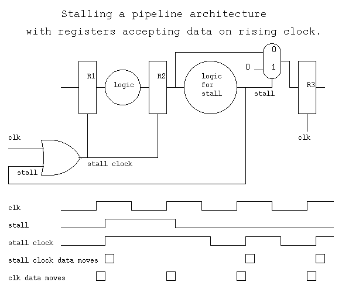
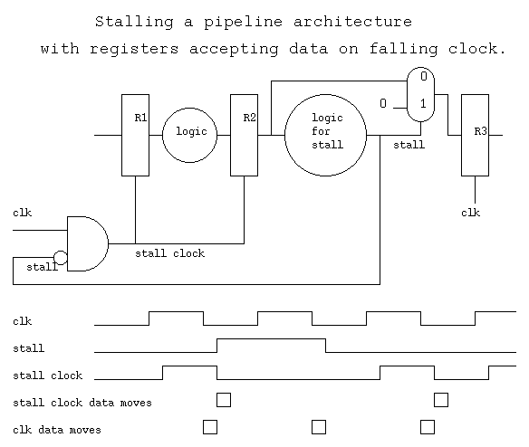
The corresponding VHDL source code and output for the cases are:
stall_up.vhdl and stall_up.out
stall_down.vhdl and stall_down.out
When debugging VHDL it is sometimes useful to follow every change
to some signal. This signal tracing is easily accomplished by
a small process.
The technique is to have a process that monitors the signal(s)
For each signal, say xxx, create a process in the design unit with the signal
prtxxx: process (xxx)
variable my_line : LINE;
alias swrite is write [line, string, side, width] ;
begin
swrite(my_line, "xxx=");
write(my_line, xxx);
swrite(my_line, ", at=");
write(my_line, now);
writeline(output, my_line);
end process prtxxx;
Obviously edit the above and replace xxx with your signal name.
Now, every time your signal changes a line out output shows it's value
and the time when it changed. Of particular interest is if 'U' or 'X'
appears, meaning Uninitialized or X for "don't know" ambiguous.
Do not use hwrite, this masks the 'U' and 'X'
a specific example is shown below on sum and cout
An example circuit using this technique on a 32-bit ripple carry
adder in signal_trace.vhdl
-- signal_trace.vhdl demonstrate how to trace any signal, xxx
-- The technique is to have a process that monitors the signal(s)
-- For each signal, say xxx, create a process in the design unit with the signal
--
-- prtxxx: process (xxx)
-- variable my_line : LINE;
-- alias swrite is write [line, string, side, width] ;
-- begin
-- swrite(my_line, "xxx=");
-- write(my_line, xxx);
-- swrite(my_line, ", at=");
-- write(my_line, now);
-- writeline(output, my_line);
-- end process prtxxx;
--
-- Obviously edit the above and replace xxx with your signal name.
-- Now, every time your signal changes a line out output shows it's value
-- and the time when it changed. Of particular interest is if 'U' or 'X'
-- appears, meaning Uninitialized or X for "don't know" ambiguous.
-- Do not use hwrite, this masks the 'U' and 'X'
-- a specific example is shown below on sum and cout
-- just an example circuit to generate some signals, part of ctest1.vhdl
library IEEE;
use IEEE.std_logic_1164.all;
entity fadd is -- full adder stage, interface
port(a : in std_logic;
b : in std_logic;
cin : in std_logic;
s : out std_logic;
cout : out std_logic);
end entity fadd;
architecture circuits of fadd is -- full adder stage, body
begin -- circuits of fadd
s <= a xor b xor cin after 1 ns;
cout <= (a and b) or (a and cin) or (b and cin) after 1 ns;
end architecture circuits; -- of fadd
library IEEE;
use IEEE.std_logic_1164.all;
entity add32 is -- simple 32 bit ripple carry adder
port(a : in std_logic_vector(31 downto 0);
b : in std_logic_vector(31 downto 0);
cin : in std_logic;
sum : out std_logic_vector(31 downto 0);
cout : out std_logic);
end entity add32;
architecture circuits of add32 is
signal c : std_logic_vector(0 to 30); -- internal carry signals
begin -- circuits of add32
a0: entity WORK.fadd port map(a(0), b(0), cin, sum(0), c(0));
stage: for I in 1 to 30 generate
as: entity WORK.fadd port map(a(I), b(I), c(I-1) , sum(I), c(I));
end generate stage;
a31: entity WORK.fadd port map(a(31), b(31), c(30) , sum(31), cout);
end architecture circuits; -- of add32
use STD.textio.all;
library IEEE;
use IEEE.std_logic_1164.all;
use IEEE.std_logic_textio.all;
entity signal_trace is
end signal_trace;
architecture circuits of signal_trace is
signal a: std_logic_vector(31 downto 0) := x"00000000";
signal b: std_logic_vector(31 downto 0) := x"FFFFFFFF";
signal cin: std_logic := '1';
signal cout: std_logic;
signal sum: std_logic_vector(31 downto 0);
begin -- circuits of signal_trace
adder: entity WORK.add32 port map(a, b, cin, sum, cout); -- parallel circuit
prtsum: process (sum)
variable my_line : LINE;
alias swrite is write [line, string, side, width] ;
begin
swrite(my_line, "sum=");
write(my_line, sum);
swrite(my_line, ", at=");
write(my_line, now);
writeline(output, my_line);
end process prtsum;
end architecture circuits; -- of signal_trace
signal_trace.out
sum=UUUUUUUUUUUUUUUUUUUUUUUUUUUUUUUU, at=0 NS
sum=UUUUUUUUUUUUUUUUUUUUUUUUUUUUUUU0, at=1 NS
sum=UUUUUUUUUUUUUUUUUUUUUUUUUUUUUU00, at=2 NS
sum=UUUUUUUUUUUUUUUUUUUUUUUUUUUUU000, at=3 NS
sum=UUUUUUUUUUUUUUUUUUUUUUUUUUUU0000, at=4 NS
sum=UUUUUUUUUUUUUUUUUUUUUUUUUUU00000, at=5 NS
sum=UUUUUUUUUUUUUUUUUUUUUUUUUU000000, at=6 NS
sum=UUUUUUUUUUUUUUUUUUUUUUUUU0000000, at=7 NS
sum=UUUUUUUUUUUUUUUUUUUUUUUU00000000, at=8 NS
sum=UUUUUUUUUUUUUUUUUUUUUUU000000000, at=9 NS
sum=UUUUUUUUUUUUUUUUUUUUUU0000000000, at=10 NS
sum=UUUUUUUUUUUUUUUUUUUUU00000000000, at=11 NS
sum=UUUUUUUUUUUUUUUUUUUU000000000000, at=12 NS
sum=UUUUUUUUUUUUUUUUUUU0000000000000, at=13 NS
sum=UUUUUUUUUUUUUUUUUU00000000000000, at=14 NS
sum=UUUUUUUUUUUUUUUUU000000000000000, at=15 NS
sum=UUUUUUUUUUUUUUUU0000000000000000, at=16 NS
sum=UUUUUUUUUUUUUUU00000000000000000, at=17 NS
sum=UUUUUUUUUUUUUU000000000000000000, at=18 NS
sum=UUUUUUUUUUUUU0000000000000000000, at=19 NS
sum=UUUUUUUUUUUU00000000000000000000, at=20 NS
sum=UUUUUUUUUUU000000000000000000000, at=21 NS
sum=UUUUUUUUUU0000000000000000000000, at=22 NS
sum=UUUUUUUUU00000000000000000000000, at=23 NS
sum=UUUUUUUU000000000000000000000000, at=24 NS
sum=UUUUUUU0000000000000000000000000, at=25 NS
sum=UUUUUU00000000000000000000000000, at=26 NS
sum=UUUUU000000000000000000000000000, at=27 NS
sum=UUUU0000000000000000000000000000, at=28 NS
sum=UUU00000000000000000000000000000, at=29 NS
sum=UU000000000000000000000000000000, at=30 NS
sum=U0000000000000000000000000000000, at=31 NS
sum=00000000000000000000000000000000, at=32 NS
Ran until 40 NS + 0
http://tech-www.informatik.uni-hamburg.de/vhdl
Hamburg VHDL Archive (the best set of links I have seen!)
http://rassp.scra.org/vhdl/tools/tools.html
RASSP Project VHDL Tools
http://www.vhdl.org
VHDL Organization Home Page
http://www.freehdl.seul.org
gnu GPL VHDL for Linux, under development
http://www.symphonyeda.com/proddownloads.htm
Symphony EDA Simili VHDL compiler, free download
Last updated 8/20/07